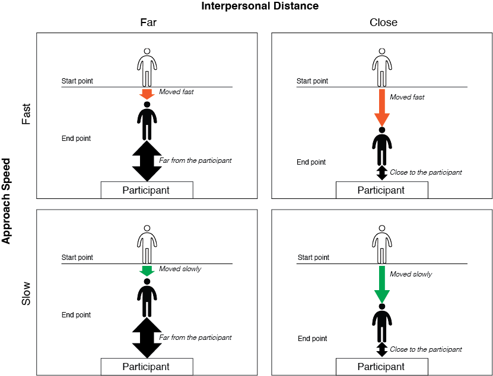

| My Role |
Team |
Affiliation |
Timeline |
| Lead Quantitative Researcher |
Myself |
USC SOLVE-IT Lab |
Sep 2022 - Apr 2023 |
Problem
While research confirms that other people's movements deliver social cues in interpersonal communication, it has not yet been investigated as to how varying degrees of interpersonal distance and approach speed can affect social anxiety and personal bubbles, especially in virtual environments.
Impact
Pioneered an investigation into the interpersonal distance and approach speed of virtual agents, specifically tailored to simulate social anxiety symptoms in VR.
Offered insights into formulating safety policies concerning personal space, highlighting potential implications for social anxiety when utilizing avatars in VR environments.
Research Questions
How does virtual agents' interpersonal distance and approach speed influence the situational social anxiety, personal space, and sense of physical closeness?
Are the effects different between socially anxious individuals and healthy individuals?
Goals
Investigate how to optimize interpersonal distance and approach speed of virtual agents in virtual environments.
Investigate how virtual agents should be designed differently according to the level of social anxiety.
Research Design
305 participants (147 socially anxious individuals and 158 healthy individuals) were recruited on Prolific.
2 conditions for interpersonal distance (close vs. far) and 2 conditions for approach speed (slow vs. fast) were tested in an online experiment.

Virtual agents and movements were created using Unity and Adobe Mixamo.
Virtual characters used in the experiment
Each participant watched 8 videos of 8 different virtual agents moving toward them.
Examples of videos shown to participants
Analysis
After data cleaning, 189 observations (127 socially anxious individuals and 62 healthy individuals) were included in the analysis.
To account for the violation of normal distribution, robust independent-samples t-tests and robust two-way ANOVAs were performed in R.
Findings
General differences:
In general, socially anxious individuals experienced greater situational social anxiety and felt their personal space is being invaded more compared to healthy individuals.
Socially anxious individuals and healthy individuals both had similar estimations of interpersonal distance from oneself to the virtual agents in feet.
However, socially anxious individuals thought that virtual agents were closer to them compared to what healthy individuals thought, although the virtual agents were standing at the same distance.
Specific to socially anxious individuals:
Socially anxious individuals felt that their personal space was invaded more when the virtual agents were standing at a closer interpersonal distance.
Socially anxious individuals felt that virtual agents were closer to them when the virtual agents were were standing at a closer interpersonal distance and approached more slowly.
In contrast, healthy individuals did not show any differences in personal space invasion or subjective sense of physical closeness.
Specific to healthy individuals:
Healthy individuals reported a smaller interpersonal distance (ft.) when the virtual agents were standing closer to them and a larger interpersonal distance (ft.) when the virtual agents were standing farther to them, which seems obvious.
However, socially anxious individuals did not display the same pattern, which is unexpected.
Recommendations
Gradually expose socially anxious individuals to closer distances, starting from farther distances, such that they can adjust to feeling comfortable with the same distances that are considered acceptable by healthy individuals.
Socially anxious individuals can be trained to get comfortable with fast-moving virtual agents first and then gradually with slowly moving virtual agents to reduce their SAD symptoms.
Room for Improvement
Confirming these findings in immersive VR headsets would enhance their practical application.
Securing additional funding to bolster the number of participants in each comparison group would enhance the analytical power of the study.